Yoga chủ đề · Halloween
Yoga chủ đề Halloween: buổi sáng cô Sophia làm phù thủy
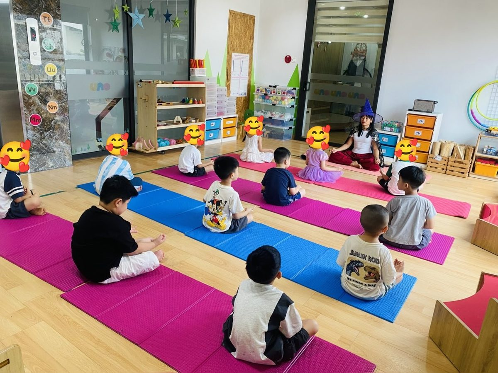
Sáng hôm ấy cô đội chiếc mũ phù thủy màu tím, khoác áo choàng đen in sao vàng, rồi bước vào lớp. Cả phòng im bặt. Một giây thôi. Rồi tiếng cười vỡ ra khắp các tấm thảm.
Có bạn chỉ tay vào cô. Có bạn trốn sau lưng bạn khác, mắt vẫn ló ra nhìn. Một bạn gái mặc váy tím xòe như công chúa thì ngồi thẳng lưng, chờ xem cô phù thủy sẽ làm gì.
Cô ngồi xuống thảm. Chưa nói gì cả. Cô chỉ nhắm mắt và thở.
Halloween có cần đáng sợ không?
Nhắc đến Halloween, người lớn hay nghĩ tới ma, tới bóng tối, tới những tiếng hét giật mình. Với các bạn ba, bốn tuổi, nỗi sợ ấy là thật. Có bạn chỉ cần nhìn thấy một chiếc mặt nạ là khóc òa.
Cô không muốn bỏ Halloween đi. Các con thích hóa trang lắm. Nhưng cô muốn Halloween ở lớp mình khác một chút. Con ma biết thở chậm. Phù thủy biết đứng yên trên một chân. Và chiếc mũ nhọn của cô không làm ai sợ, chỉ làm cả lớp tò mò.
Phép thuật đầu tiên: ngồi yên và thở
Cô bảo các con: “Phù thủy nào cũng phải học phép này trước tiên. Phép ngồi yên.” Các con khoanh chân, đặt hai bàn tay lên gối. Hít vào bằng mũi. Thở ra bằng miệng, thật khẽ, như thổi tắt một ngọn nến bí ngô.
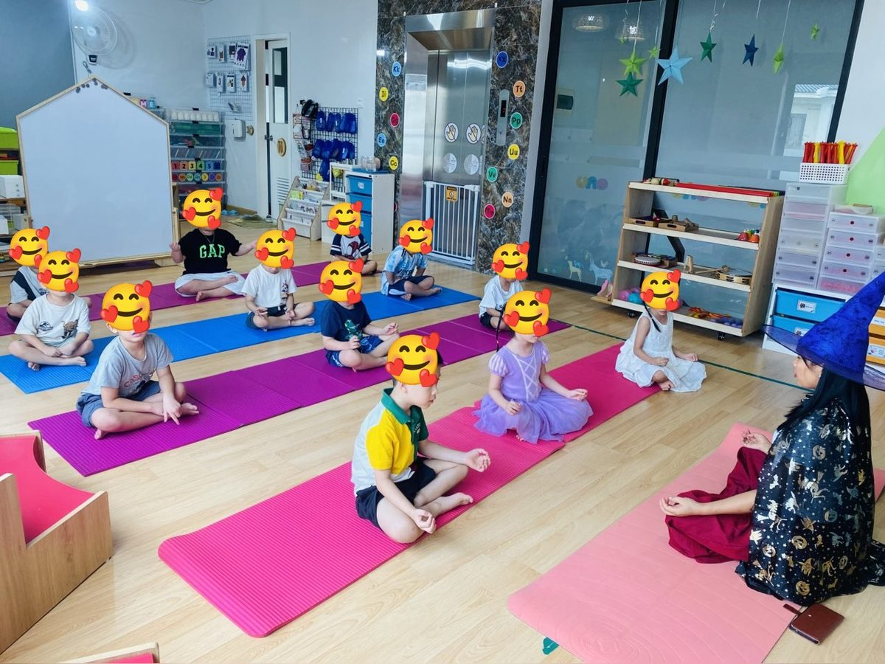
Ba hơi thở. Rồi năm. Phòng học lặng hẳn đi. Cô mở mắt và thấy mười mấy bạn nhỏ đang ngồi rất thẳng, rất nghiêm, như thể vừa được nhận vào trường phù thủy thật.
Rồi cả lớp đứng dậy, chìa hai bàn tay ra trước. Cô gọi đó là tư thế Làm phép: hai tay đưa ra, lòng bàn tay ngửa lên, hít vào gom phép thuật về, thở ra thổi phép thuật đi. Phép thuật hôm nay là để biến thành các con vật và nhân vật đêm Halloween.
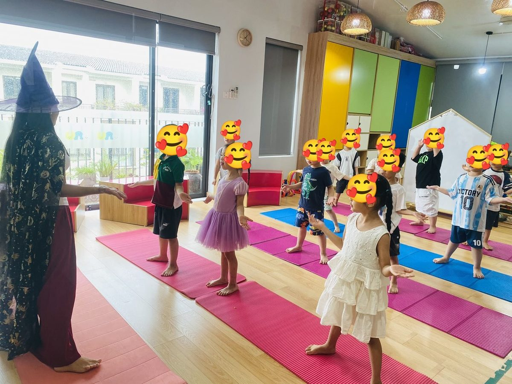
9 tư thế Halloween của lớp cô
Tên tư thế do cô Sophia đặt. Ảnh thật từ buổi học, khuôn mặt các bé được che để bảo vệ các con.
-
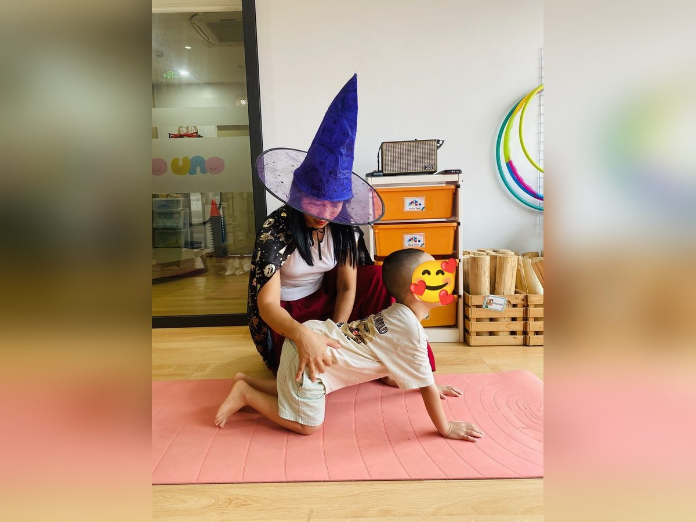
1🐈⬛ Con mèo
Cô kể: “Mèo đen thức dậy giữa đêm. Mèo duỗi lưng, ngẩng đầu ngó trăng nào.”
Cách làm: Quỳ hai gối, hai bàn tay chống xuống thảm phía trước, rộng bằng vai. Hít vào, võng lưng xuống, ngẩng đầu nhìn về trước. Thở ra, cong lưng lên cao, cúi đầu nhìn rốn. Làm chậm 3 đến 4 lần.
Điều cô để ý: Bạn nhỏ hay đẩy hông ra sau và ngồi lên gót. Cô đặt hai tay ở hông con, giữ nhẹ cho hông nằm ngay trên gối. Vậy là lưng tự cong đẹp.
-
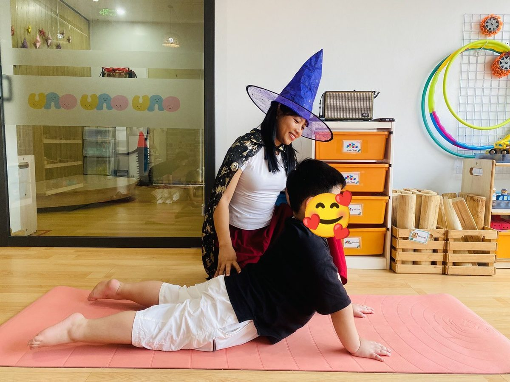
2🐺 Chó sói
Cô kể: “Trăng tròn rồi. Sói con nhổm dậy, hít thật sâu… rồi hú thật to: hú… ú… ú…”
Cách làm: Nằm sấp, hai bàn tay đặt dưới vai. Hít vào, ấn tay nâng ngực lên, mắt nhìn về trước. Bụng và hông vẫn nằm trên thảm. Thở ra bằng miệng thành tiếng hú dài, rồi hạ ngực xuống.
Điều cô để ý: Tiếng hú là hơi thở ra thật dài, các con không biết điều đó đâu. Cô chỉ thấy cả lớp cười, rồi bạn nào cũng hú lâu hơn bạn bên cạnh.
-
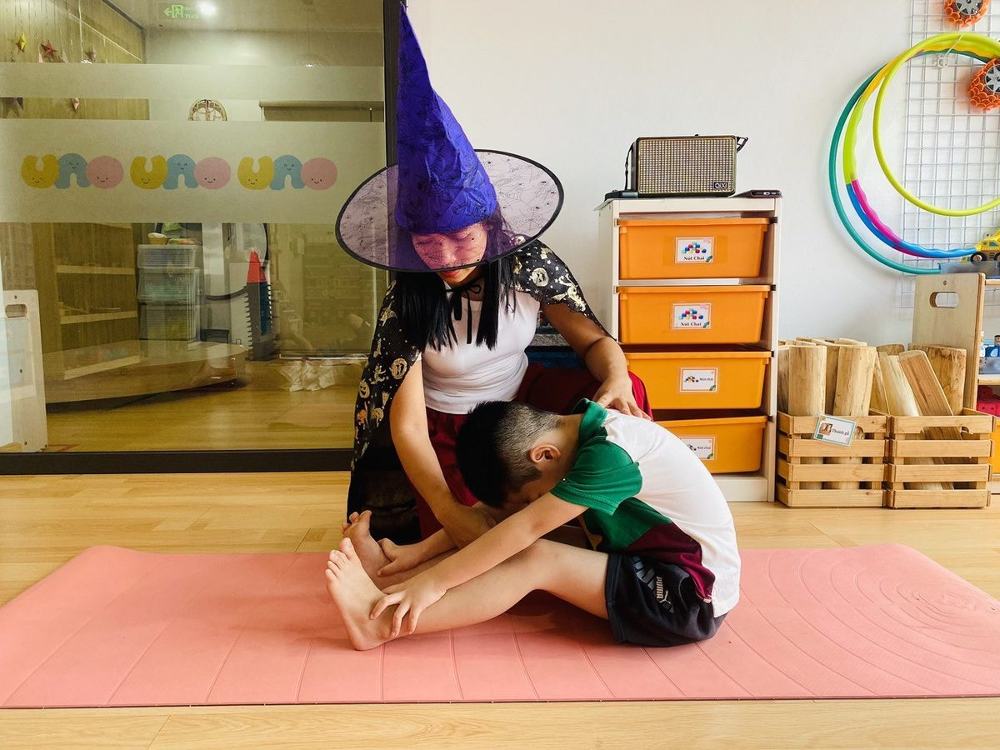
3🎃 Bí ngô
Cô kể: “Quả bí ngô tròn tròn ngủ trong vườn. Mình cuộn tròn lại như quả bí nhé.”
Cách làm: Ngồi duỗi thẳng hai chân. Hít vào, vươn hai tay lên. Thở ra, cúi người về trước, hai tay ôm cổ chân hoặc bàn chân, lưng cong tròn. Gối hơi co cũng được. Thở chậm 3 nhịp.
Điều cô để ý: Cô không kéo con xuống. Cô chỉ đặt tay lên lưng con, thật nhẹ, và thở cùng con. Lưng con mềm dần theo hơi thở.
-
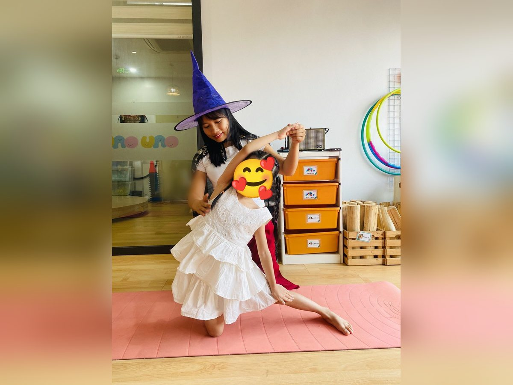
4🏴☠️ Cướp biển
Cô kể: “Thuyền cướp biển ra khơi. Thuyền nghiêng theo sóng, cánh buồm vươn lên trời.”
Cách làm: Quỳ một gối, chân kia duỗi thẳng sang ngang, bàn chân đặt trên thảm. Tay cùng bên chân duỗi đặt xuống ống chân. Tay còn lại vươn qua đầu, nghiêng người về phía chân duỗi. Giữ 3 nhịp thở rồi đổi bên.
Điều cô để ý: Cô cầm tay con dẫn lên cao, tay kia đỡ sau lưng. Bạn nhỏ nghiêng người lần đầu hay sợ ngã. Có tay cô ở đó, con dám nghiêng xa hơn.
-
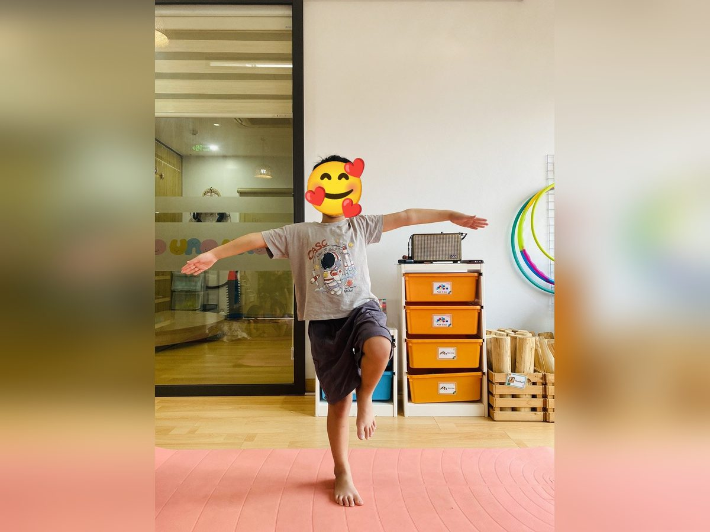
5🧙 Phù thủy
Cô kể: “Phù thủy nhỏ cưỡi chổi bay qua bầu trời. Đứng thật vững, kẻo rơi chổi đấy!”
Cách làm: Đứng trên một chân, chân kia co gối lên cao. Hai tay dang ngang như đôi cánh. Mắt nhìn một điểm phía trước. Giữ 3 đến 5 nhịp thở rồi đổi chân.
Điều cô để ý: Bạn nào lắc lư cũng cười. Cô bảo các con nhìn vào một chỗ không động đậy. Khi mắt yên, chân cũng yên hơn.
-
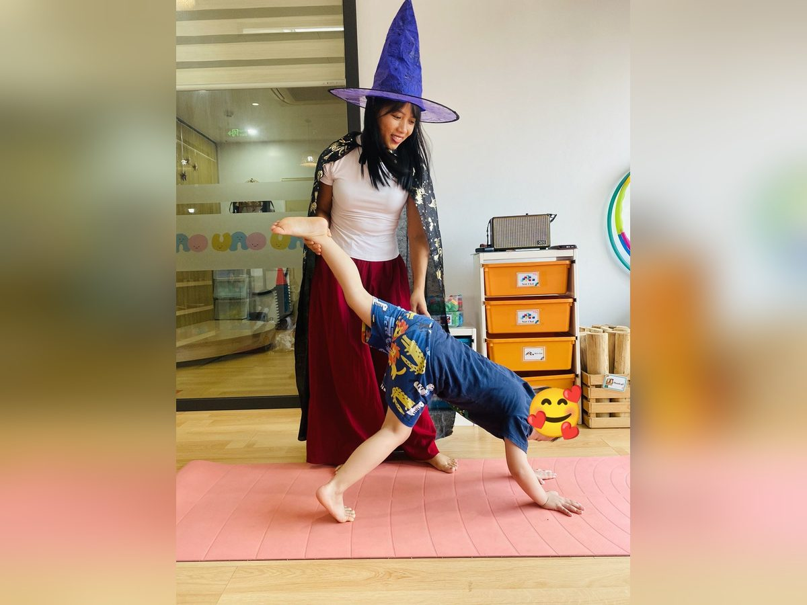
6🦇 Con dơi
Cô kể: “Bạn dơi treo ngược trên cành cây, nhìn thế giới lộn ngược. Một cánh dơi giơ lên nào!”
Cách làm: Từ tư thế bò, ấn hai tay xuống thảm, nhấc hông lên cao thành hình chữ V ngược. Rồi nhấc một chân lên cao về phía sau. Đầu thả lỏng giữa hai tay. Giữ 3 nhịp, hạ chân, đổi bên.
Điều cô để ý: Đây là tư thế khó nhất buổi. Cô đỡ cổ chân cho con, để con thấy chân mình bay lên cao mà không sợ ngã.
-
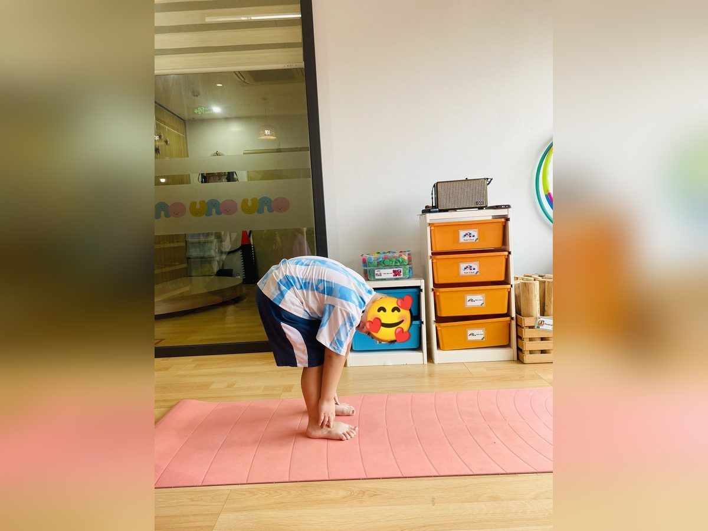
7👻 Con ma
Cô kể: “Con ma nhỏ trốn sau gốc cây. Cúi thấp… thấp nữa… rồi từ từ đứng dậy: Bù!”
Cách làm: Đứng hai chân rộng bằng hông. Thở ra, cúi gập người, hai tay chạm cổ chân hoặc bàn chân, đầu và cổ thả lỏng. Gối hơi chùng. Giữ 3 nhịp, rồi cuộn người lên thật chậm, đầu lên sau cùng, và nói “Bù!”.
Điều cô để ý: Tiếng “Bù!” là phần các con chờ nhất. Nhưng cô thấy khoảnh khắc đẹp nhất lại là lúc cúi xuống. Cả lớp im phăng phắc, chỉ còn tiếng thở.
-
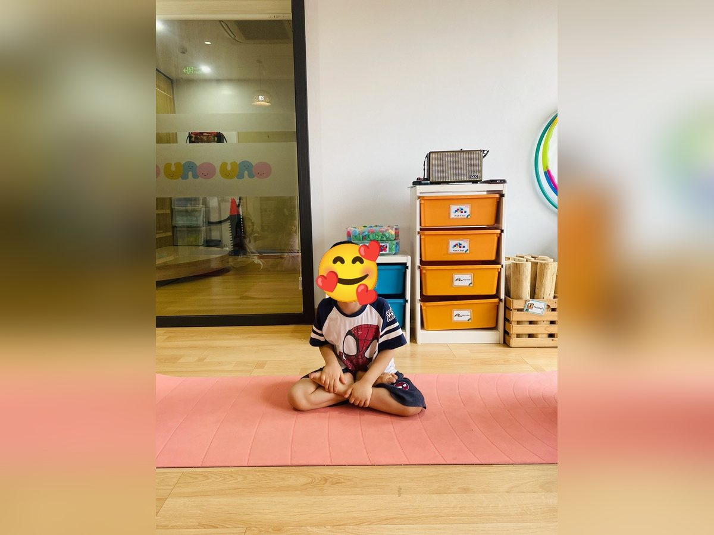
8👸 Công chúa
Cô kể: “Công chúa ngồi trên ngai, lưng thẳng, cằm hơi ngẩng, mỉm cười với cả vương quốc.”
Cách làm: Ngồi xếp bằng, hai tay ôm lấy bàn chân. Lưng thẳng, vai thả xuống, ngực mở. Mắt nhìn thẳng về trước và mỉm cười. Thở chậm 3 đến 5 nhịp.
Điều cô để ý: Hôm ấy “công chúa” của cô là một bạn trai mặc áo Người Nhện. Con ngồi thẳng lưng, mím môi cười. Halloween mà. Ai muốn làm gì cũng được.
-
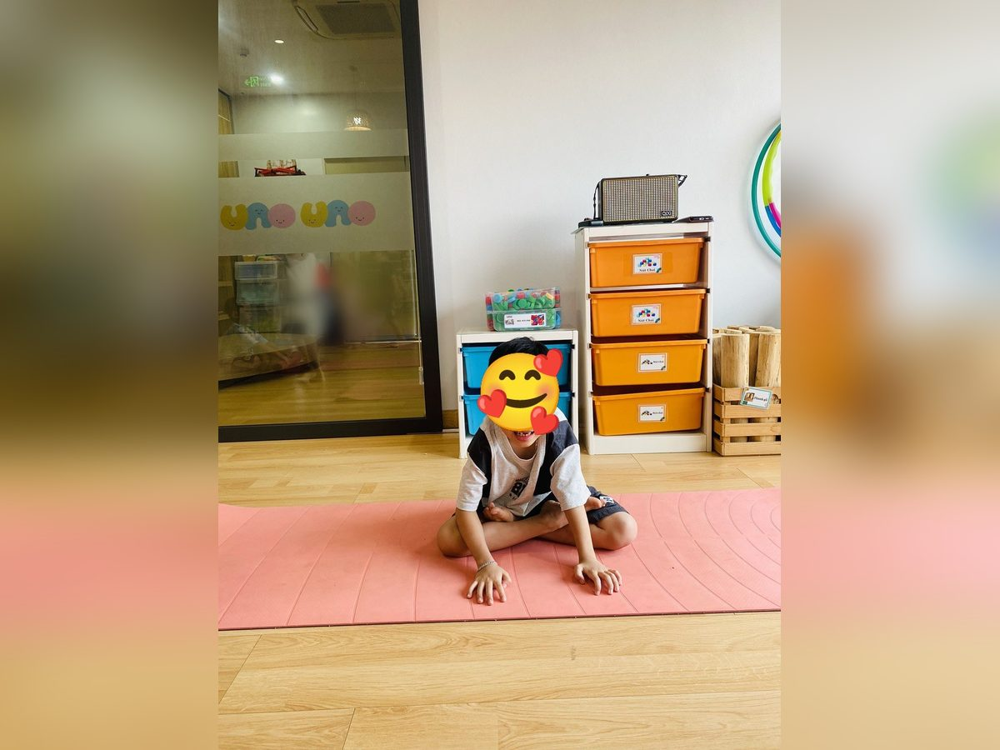
9🦸 Siêu nhân
Cô kể: “Siêu nhân sắp cất cánh! Hai tay ấn xuống đất, lấy đà… sẵn sàng chưa?”
Cách làm: Ngồi xếp bằng, đặt hai bàn tay xuống thảm hai bên gối. Ấn tay xuống, ngồi thật thẳng, vai mở. Bạn nào khỏe thì thử nhấc mông lên khỏi thảm một chút. Giữ 2 đến 3 nhịp thở.
Điều cô để ý: Nhấc người lên không phải bạn nào cũng làm được. Không sao. Cô chỉ cần thấy con ấn tay xuống thật chắc, mắt sáng lên. Thế là siêu nhân rồi.
Những gì cô thấy ở các con
Hôm ấy không có bạn nào khóc. Không có bạn nào sợ.
Có một bạn đầu buổi cứ ngồi nép phía sau, không chịu lại gần cô phù thủy. Đến tư thế Chó sói thì con hú to nhất lớp. Đến tư thế Con dơi, con tự bò lên thảm của cô và nói: “Cô đỡ chân con với.”
Cô nghĩ đó là điều quý nhất của Yoga chủ đề. Các con không học tư thế. Các con được sống trong một câu chuyện. Trong câu chuyện ấy, nỗi sợ được gọi tên, được hóa thành con mèo, con dơi, con ma bé xíu. Và cơ thể con tự tìm ra cách bình tĩnh: thở chậm, đứng vững, thả lỏng.
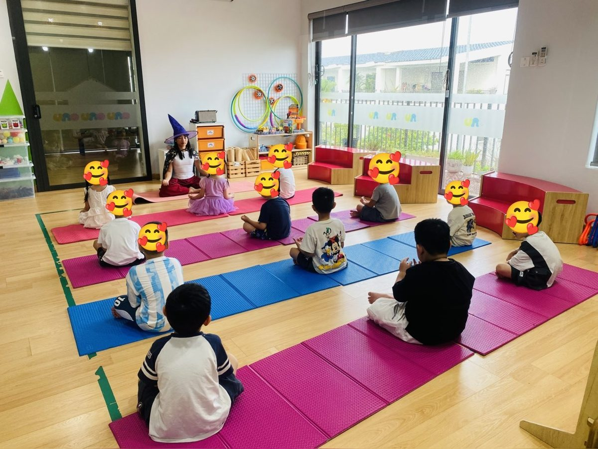
Cuối buổi, cô cho cả lớp ngồi lại như lúc đầu. Lần này không cần cô nhắc. Các con tự khoanh chân, tự đặt tay lên gối. Một bạn nhỏ thì thầm: “Phép ngồi yên đấy.”
Cô cười. Mũ phù thủy suýt rơi.
Vài điều cô hay để ý
- Cô hóa trang cho vui, không hóa trang cho sợ. Mũ, áo choàng thì được. Mặt nạ, máu giả, tiếng hét thì cô không dùng với các bạn nhỏ.
- Bạn nào sợ, cô cho ngồi gần cô. Cô không ép con vào tư thế. Ngồi xem cũng là đang học.
- Tư thế đứng một chân và Con dơi cô luôn đứng cạnh để đỡ. Bé nhỏ có thể vịn tường.
- Mỗi tư thế giữ 3 đến 5 nhịp thở, rồi nghỉ. Các con ba, bốn tuổi chưa cần giữ lâu.
- Không tập ngay sau khi ăn no. Bé mệt hay ốm thì cô để con nằm nghỉ trên thảm.
🌟 Điều các con mang về sau buổi tập
Svadhyaya là hiểu chính mình. Con biết lúc nào mình đang sợ, và biết thở chậm để thấy ổn hơn.
Ahimsa là yêu thương, không làm ai sợ hãi. Halloween ở lớp cô là để cùng cười, không phải để dọa nhau.
Một chiếc mũ phù thủy, chín tư thế, và mười mấy bạn nhỏ học được rằng nỗi sợ có thể thở ra được. Với cô, Halloween như vậy là đẹp lắm rồi.
🌿 Thầy cô muốn dạy một buổi Halloween như thế này?
Cách kể chuyện để các con nhập vai, cách đỡ bé ở tư thế khó, cách đưa cả lớp từ ồn ào về ngồi yên… cô hướng dẫn kỹ trong khóa Đào tạo Huấn luyện viên Yoga trẻ em, cùng hơn 50 chủ đề Yoga cho cả năm học.
Muốn có thêm một câu chuyện Halloween 15 phút để kể cho các con, thầy cô đọc truyện Bí Ngô Tròn không sợ bóng tối nhé. Bố mẹ muốn con được học ở lớp của cô thì nhắn cô hỏi lịch.